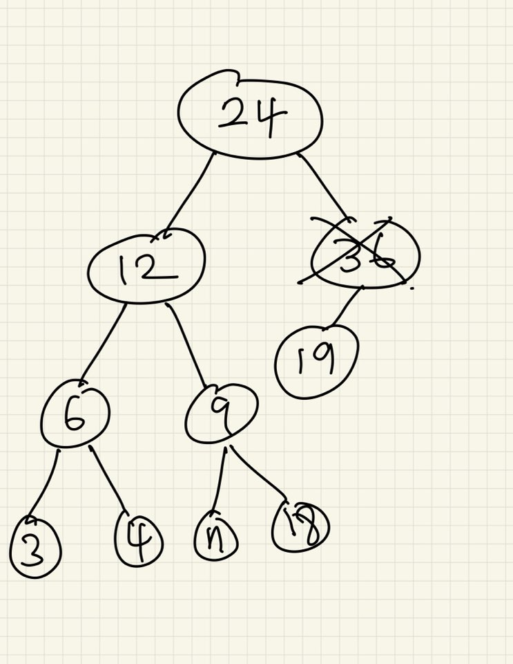

1. 이진탐색트리의 탐색과 삽입
1-1. 탐색
이진탐색트리란 무엇일까요?
이진트리 중, 탐색 즉 자신이 원하는 값을 찾기 위해 효율적으로 배치된 자료구조입니다.
왼쪽 서브 트리는 자신의 값보다 작은 값을 넣고, 오른쪽 서브 트리는 자신의 값보다 큰 값을 넣습니다.
- getLeft():왼쪽 노드로 이동
- getRight():오른쪽 노드로 이동
PNODE searchRecur ( PNODE n , int key ){
if (n == NULL) return NULL;
if (key == n->getData()) return n;
else if (key < n->getData()) return searchRecur(n->getLeft(),key);
else return searchRecur(n->getRight(),key);
}
1-2. 삽입
이번엔 값을 넣을 땐, 어떻게 해야할까요?
이진탐색트리의 정렬을 위해선 새로운 값을 적당한 자리에 넣는 것이 매우 중요합니다.
PNODE searchRecur ( PNODE r , PNODE put ){
if (r->getData() == n->getData()) return;
else if (n->getData() < r->getData()) {
if (r->getLeft() == NULL) r->setLeft(n);
else insertRecur(r->getLeft(),n);
}
else {
if (r->getRight() == NULL) r->setRight(n);
else insertRecur(r->getRight(),n);
}
}
- 값이 중복되면, 함수를 끝냅니다.
- 새로 넣는 노드의 값이 노드보다 작고 노드가 비어있다면, 왼쪽으로 노드를 보냅니다.
- 새로 넣는 노드의 값이 노드보다 작은데, 이미 노드가 있다면 다시 탐험해봅니다.
- 새로 넣는 노드의 값이 노드보다 크고 노드가 비어있다면, 오른쪽으로 노드를 보냅니다.
- 새로 넣는 노드의 값이 노드보다 큰데, 이미 노드가 있다면 다시 탐험해봅니다.
2. 이진 트리의 삭제
2-1. 첫번째 경우
첫번째 경우는 삭제하려는 노드가 단말 노드, 즉 자식이 없는 경우입니다. 이 경우는 제일 쉽습니다. 그냥 그 노드를 부모노드로부터 해방시키면 모든 게 해결됩니다.
2-2. 두번째 경우
여기서 12를 삭제한다고 가정해봅시다. 그럼 그 자리에는 누가 들어가는게 좋을까요?
- 6이나 9일 경우: 트리의 자식을 처리하기 위해 너무 많은 비용이 발생합니다.
- 3일 경우: 왼쪽 값이 6이 되어버려, 트리의 규칙이 깨집니다.
- 4일 경우: 트리가 깨지지 않습니다.
- 7일 경우: 트리가 깨지지 않습니다.
- 18일 경우: 오른쪽 값보다 커져, 트리의 규칙이 깨집니다.
2-3. 세번째 경우

여기서 36을 삭제한다고 가정해봅시다. 그럼 그 자리에는 누가 들어가는게 좋을까요?
그냥 36을 지워버린 후, 19를 넣어두면 아무런 문제가 나지 않습니다.
3. 느낀점
이번주 면접 보는데, 비오는 중에 런닝을 뛰어서 감기에 걸렸는지 일주일 내내 아파서, 힘든 주였지만 나름대로 열심히 해보려고 노력해봤습니다.